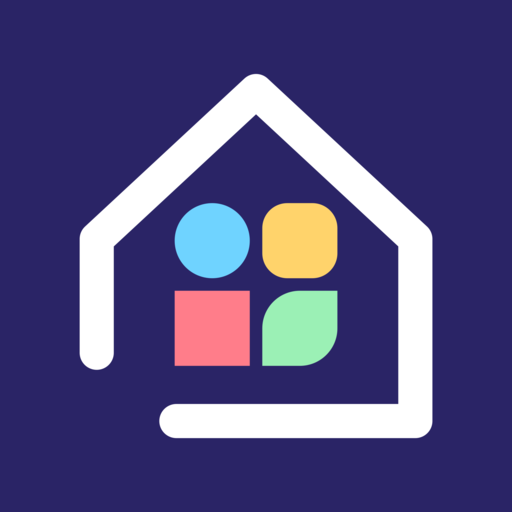

Morpa Launcher
Privacy Policy
Effective 13 November 2026 · Developer: Morpa Studio · Contact: morpalauncher@gmail.com
In short
Morpa Launcher ("Morpa") is a home-screen app for Android. It does not collect, store on a server, sell, or share any personal data. Morpa has no internet access: it does not request Android's Internet permission, so nothing it handles can leave your phone through it.
What Morpa uses on your phone, and why
- Your installed apps. Morpa reads the list of installed apps, their names and icons so it can show and organize them. Your categories, folders, Home layout, favorites, recently opened apps and settings are saved only on your phone.
- Notifications (optional, off until you turn it on). If you grant notification access, tiles can show an app's latest message, how many are waiting, and what is playing. This is kept only in memory while Morpa runs. It is never written to storage and never sent anywhere. You can turn it off at any time in Android's settings.
- Accessibility service (optional, off until you turn it on). If you enable "Morpa: system actions", Morpa uses it only to turn the screen off, take a screenshot, or open recent apps when you ask it to. The service does not receive accessibility events and does not read anything on your screen.
- Calendar (optional, off until you allow it). If you allow calendar access, the calendar widget shows what is still to come today: each event's title, time, and whether it lasts all day. Morpa reads this only while the widget shows it, does not save it, and never sends it anywhere. You can withdraw access at any time in Android's settings.
- Sound levels for the equalizer (optional, off until you allow it). The Live equalizer widget moves with the music your phone is playing. To read how loud each band of that sound is, Android asks for the microphone permission. Morpa does not listen through the microphone: it reads only the levels of the sound your phone is playing, while the widget is on screen, does not record or save anything, and never sends anything anywhere. Without the permission, the equalizer dances on its own. You can withdraw it at any time in Android's settings.
- Wallpaper and pictures. An image you pick as Morpa's background or profile picture is copied into Morpa's own storage on your phone. If you ask, Morpa sets its background as your device wallpaper. On Android 12 and older, Morpa may read the device wallpaper (with your permission) to blur it behind glass tiles; this stays on your phone.
- Brightness and volume. If you allow "Modify system settings", Morpa changes screen brightness only when you move its brightness slider. Media volume is changed only when you move the volume slider.
- Uninstalling apps. When you choose Uninstall for an app, Morpa asks Android to show its own uninstall screen, where you confirm.
- Network state. Morpa reads whether Wi-Fi or mobile data is connected, only to show a status icon. It does not use the network.
- Other apps' widgets. Widgets you add are drawn by the apps that provide them; their data is handled by those apps under their own policies.
Purchases
Morpa Pro is sold through Google Play. Payment details are handled entirely by Google; Morpa only learns whether Pro has been bought. See Google's privacy policy for how Google processes payments.
Bug reports and feature requests
If you choose "Report a bug" or "Request a feature", Morpa opens your own email app with a message that includes the app version, device model, Android version, theme and language. Nothing is sent unless you send that email yourself, and you can edit or delete any of it first.
Children
Morpa is not directed at children and does not knowingly collect any information from anyone.
Deleting your data
Everything Morpa keeps is on your phone. Clearing Morpa's storage in Android's settings, or uninstalling Morpa, deletes it.
If backup is turned on for your device, Android may include Morpa's settings in your device backup in your Google account. Google makes and keeps that backup under its own privacy policy, and Morpa cannot read it. You can turn backup off in Android's settings.
Morpa's own Backup & restore makes a backup file only when you ask for it, or on the schedule you set for automatic backup, and saves it where you choose. The file holds Morpa's settings and the pictures you added to Morpa. It stays on your phone or wherever you put it; Morpa never sends it anywhere.
Changes
If this policy changes, the new version will be posted on this page with a new effective date.
Contact
Questions about privacy: morpalauncher@gmail.com. The rules for using Morpa are in the Terms of Service.
Ringkasnya
Morpa Launcher ("Morpa") adalah aplikasi layar utama untuk Android. Morpa tidak mengumpulkan, tidak menyimpan di server, tidak menjual, dan tidak membagikan data pribadi apa pun. Morpa tidak punya akses internet: Morpa tidak meminta izin Internet dari Android, jadi tidak ada yang diolahnya yang bisa keluar dari HP Anda lewat Morpa.
Yang dipakai Morpa di HP Anda, dan alasannya
- Aplikasi yang terpasang. Morpa membaca daftar aplikasi, nama, dan ikonnya untuk menampilkan dan mengaturnya. Kategori, folder, susunan Home, favorit, aplikasi yang baru dibuka, dan pengaturan Anda hanya disimpan di HP Anda.
- Notifikasi (opsional, mati sampai Anda menyalakannya). Kalau Anda memberi akses notifikasi, tile bisa menampilkan pesan terbaru sebuah aplikasi, jumlah yang menunggu, dan yang sedang diputar. Data ini hanya disimpan di memori selama Morpa berjalan, tidak pernah ditulis ke penyimpanan, dan tidak pernah dikirim ke mana pun. Anda bisa mematikannya kapan saja di pengaturan Android.
- Layanan aksesibilitas (opsional, mati sampai Anda menyalakannya). Kalau Anda mengaktifkan "Morpa: aksi sistem", Morpa memakainya hanya untuk mematikan layar, mengambil screenshot, atau membuka aplikasi terbaru saat Anda memintanya. Layanan ini tidak menerima event aksesibilitas dan tidak membaca apa pun di layar Anda.
- Kalender (opsional, mati sampai Anda mengizinkannya). Kalau Anda mengizinkan akses kalender, widget kalender menampilkan acara yang masih akan berlangsung hari ini: judul, jam, dan apakah acaranya sepanjang hari. Morpa membacanya hanya selama widget menampilkannya, tidak menyimpannya, dan tidak pernah mengirimnya ke mana pun. Anda bisa mencabut aksesnya kapan saja di pengaturan Android.
- Level suara untuk equalizer (opsional, mati sampai Anda mengizinkannya). Widget equalizer Live bergerak mengikuti musik yang sedang diputar HP Anda. Untuk membaca seberapa keras tiap bagian suara itu, Android meminta izin mikrofon. Morpa tidak mendengarkan lewat mikrofon: Morpa hanya membaca level suara yang sedang diputar HP Anda, selama widget tampil di layar, tidak merekam atau menyimpan apa pun, dan tidak pernah mengirim apa pun ke mana pun. Tanpa izin ini, equalizer bergerak dengan sendirinya. Anda bisa mencabut izinnya kapan saja di pengaturan Android.
- Wallpaper dan gambar. Gambar yang Anda pilih sebagai latar atau foto profil Morpa disalin ke penyimpanan Morpa sendiri di HP Anda. Kalau Anda meminta, Morpa memasang latarnya sebagai wallpaper perangkat. Di Android 12 ke bawah, Morpa dapat membaca wallpaper perangkat (dengan izin Anda) untuk mengaburkannya di balik tile kaca; ini tetap di HP Anda.
- Kecerahan dan volume. Kalau Anda mengizinkan "Ubah setelan sistem", Morpa mengubah kecerahan layar hanya saat Anda menggeser slider kecerahannya. Volume media hanya diubah saat Anda menggeser slider volume.
- Mencopot aplikasi. Saat Anda memilih Copot untuk sebuah aplikasi, Morpa meminta Android menampilkan layar pencopotannya sendiri, dan Anda mengonfirmasinya di sana.
- Status jaringan. Morpa membaca apakah Wi-Fi atau data seluler tersambung, hanya untuk menampilkan ikon status. Morpa tidak memakai jaringan.
- Widget aplikasi lain. Widget yang Anda tambahkan digambar oleh aplikasi penyedianya; datanya diolah aplikasi tersebut menurut kebijakannya sendiri.
Pembelian
Morpa Pro dijual lewat Google Play. Data pembayaran sepenuhnya diolah Google; Morpa hanya mengetahui apakah Pro sudah dibeli. Lihat kebijakan privasi Google untuk cara Google mengolah pembayaran.
Laporan bug dan usulan fitur
Kalau Anda memilih "Laporkan bug" atau "Usulkan fitur", Morpa membuka aplikasi email Anda sendiri dengan pesan berisi versi aplikasi, model perangkat, versi Android, tema, dan bahasa. Tidak ada yang terkirim kecuali Anda sendiri mengirim email itu, dan Anda bisa mengubah atau menghapus isinya lebih dulu.
Anak-anak
Morpa tidak ditujukan untuk anak-anak dan tidak dengan sengaja mengumpulkan informasi dari siapa pun.
Menghapus data Anda
Semua yang disimpan Morpa ada di HP Anda. Menghapus penyimpanan Morpa di pengaturan Android, atau mencopot Morpa, akan menghapusnya.
Kalau pencadangan perangkat Anda menyala, Android dapat menyertakan pengaturan Morpa dalam cadangan perangkat di akun Google Anda. Cadangan itu dibuat dan disimpan Google menurut kebijakan privasinya sendiri, dan Morpa tidak dapat membacanya. Anda bisa mematikan pencadangan di pengaturan Android.
Fitur Cadangkan & pulihkan milik Morpa membuat file cadangan hanya bila Anda memintanya, atau sesuai jadwal yang Anda atur untuk cadangan otomatis, dan menyimpannya di tempat yang Anda pilih. File itu berisi pengaturan Morpa dan gambar yang Anda tambahkan ke Morpa. File tetap di HP Anda atau di tempat Anda menaruhnya; Morpa tidak pernah mengirimnya ke mana pun.
Perubahan
Kalau kebijakan ini berubah, versi barunya akan dipasang di halaman ini dengan tanggal berlaku yang baru.
Kontak
Pertanyaan soal privasi: morpalauncher@gmail.com. Aturan pemakaian Morpa ada di Ketentuan Layanan.